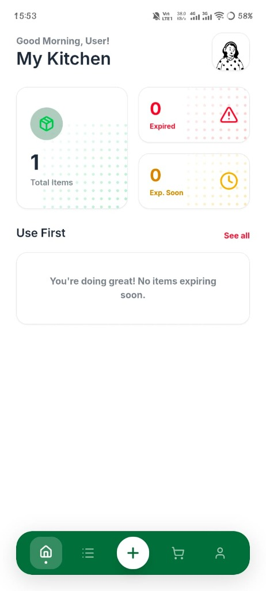
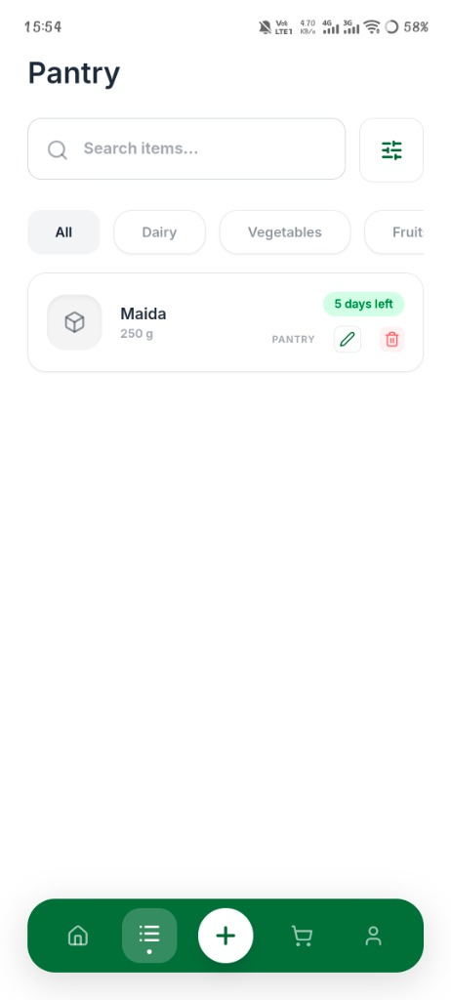
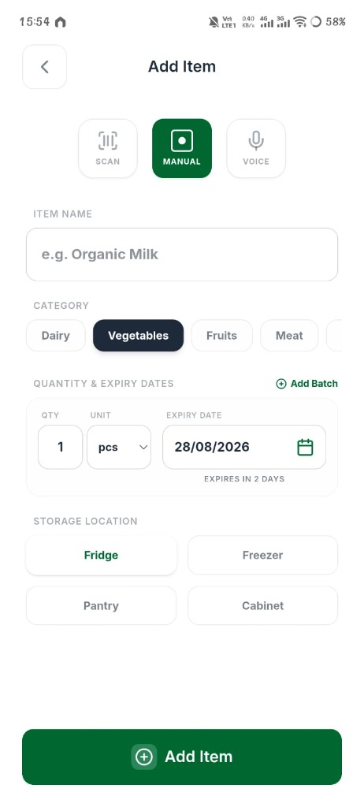
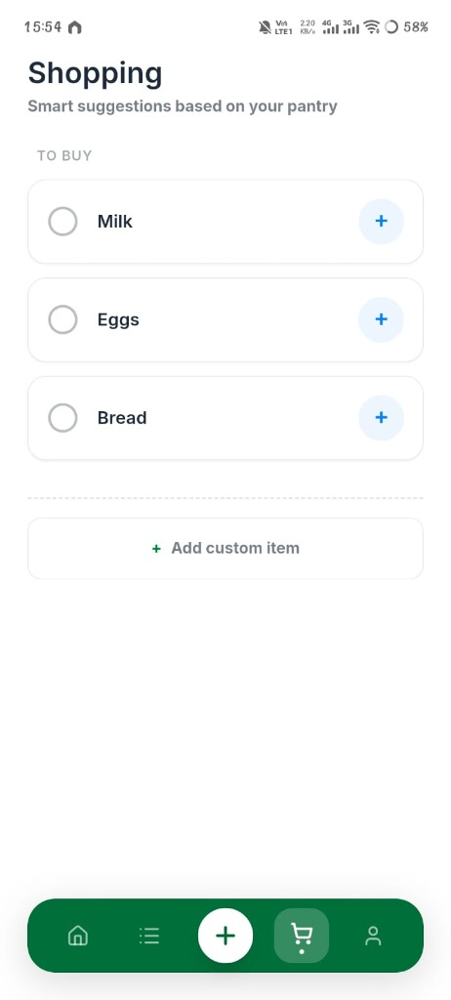
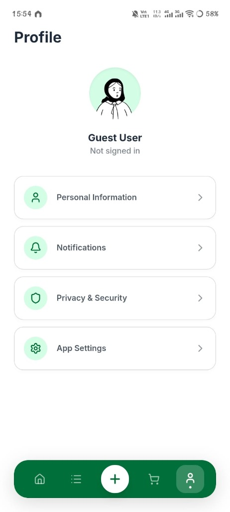

Fresh Track
Product Expiry Tracking & Food Waste Reduction Mobile App empowering households to track pantry shelf-life, minimize food waste, and automate smart grocery shopping.
Project Overview
Silent Pantry Food Waste
Busy households routinely waste 20-30% of purchased groceries simply because items get buried in fridge drawers or pantry cabinets and go past their expiration date unnoticed.
Smart Expiry & Pantry Sync
Fresh Track simplifies inventory management with multi-modal item logging (barcode, manual, voice), automatic "Use First" priority alerts, and automated shopping list suggestions for depleted items.
High-Fidelity Interface Showcase
Click on any screen to inspect full resolution in lightbox view.

1. My Kitchen Dashboard
Overview of total pantry items, expiry count alerts, and "Use First" priority food items.

2. Pantry Inventory
Category chips (Dairy, Vegetables, Fruits), item search, and color-coded expiry badges ("5 days left").

3. Multi-Modal Add Item
Scan, Manual, or Voice input with expiry date picker and storage location selector (Fridge, Freezer, Pantry, Cabinet).

4. Smart Shopping List
Auto-generated restocking suggestions based on depleted pantry inventory with custom item addition.

5. Profile & Preferences
User account management, notification frequency alerts, and privacy security settings.
Key Features & Design Highlights
Multi-Modal Input
Barcode scanning, manual logging, and voice recognition for fast item entry.
Expiry Countdowns
Visual color-coded badges highlighting urgent items to consume first.
Storage Locations
Organized tracking across Fridge, Freezer, Pantry, and Cabinet zones.
Pantry Restock Sync
Smart grocery recommendations triggered as soon as pantry items run out.